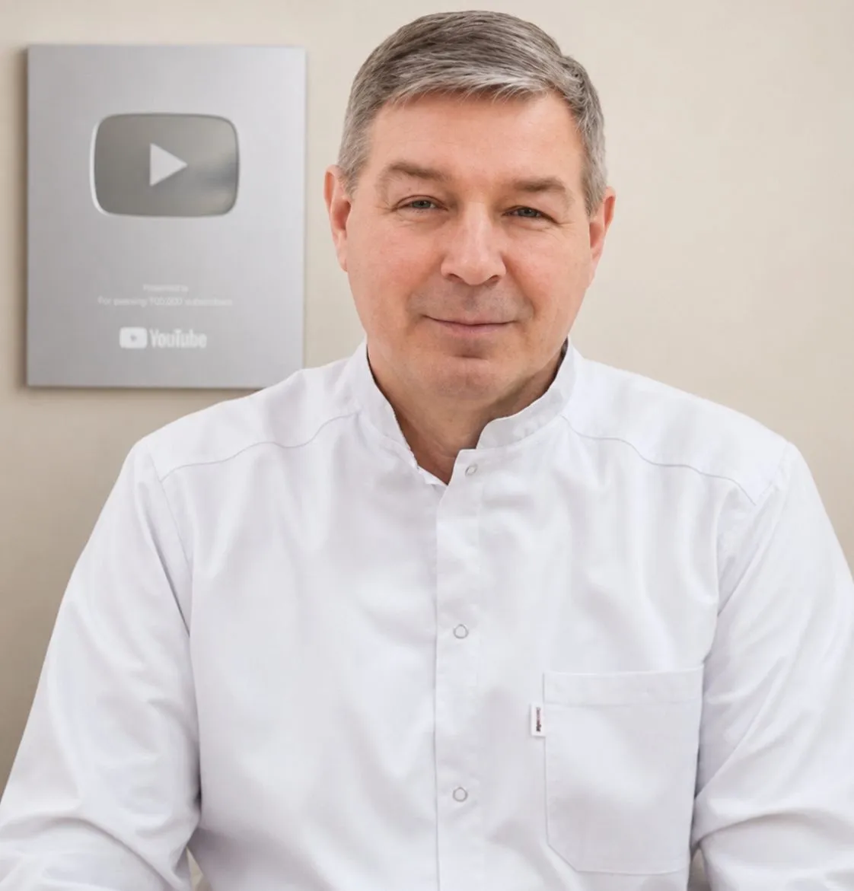
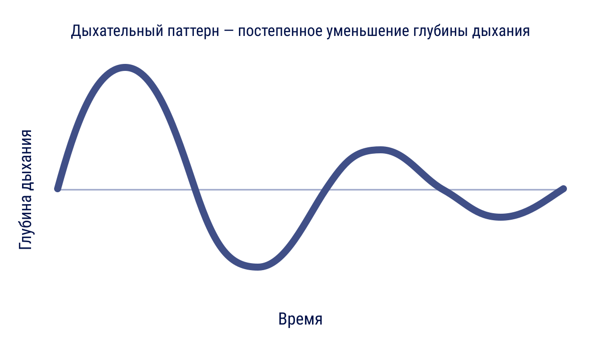
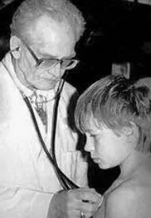

Бесплатный урок метода Бутейко
Ваш урок по методу Бутейко
Начните с бесплатного урока метода Бутейко. Практическое задание для начинающих — в Telegram
Метод Бутейко — обучение оздоровительному дыханию

Дыхательные практики, индивидуальное обучение и подготовка методистов ВЛГД
Я — Алик Муллахметов, методист-ревизор ВЛГД по методу Бутейко, преподаватель оздоровительного дыхания и специалист с более чем 30-летним опытом практики и преподавания метода Бутейко.
Для консультации и поддержки свяжитесь со мной удобным для вас способом:
Telegram: @alikmullahmetov, Viber / WhatsApp: +38 099 717 3275, Email: noastma@gmail.com
Буду рад ответить на ваши вопросы и помочь определить оптимальный формат консультации или обучения.
Предварительная запись на консультацию бесплатная. После нажатия кнопки вы перейдёте в мой Telegram. Напишите слово «Консультация», и я свяжусь с вами, чтобы уточнить ваш запрос и согласовать удобное время.
Отсканируйте QR-код — он тоже ведёт в Telegram, к бесплатной серии уроков для начинающих.
Что такое метод Бутейко?
Метод Бутейко — это оздоровительная система нормализации дыхания, направленная на уменьшение избыточной вентиляции лёгких и формирование физиологического стереотипа дыхания.
Это не просто задержки дыхания. Метод включает разные уровни дыхательной практики, работу с расслаблением, уменьшением вентиляции и адаптацией дыхания к повседневной жизни.

Чем я могу помочь
- Переобучение дыхания для уменьшения тревожности и усталости
- Восстановительные дыхательные практики после лечения
- Техники снижения стресса для поддержки эмоционального благополучия
- Восстановление связи между телом и сознанием во время безопасных занятий с сопровождением

Поддержка оздоровления в комфорте вашего дома
Все занятия проводятся онлайн в Zoom — в комфортной и безопасной домашней обстановке. Физическая нагрузка не обязательна, а каждое занятие адаптируется к вашему состоянию.
Обучение методу Бутейко
Индивидуальное обучение методу Бутейко
Персональная работа с дыханием, расслаблением и формированием правильного дыхательного стереотипа.
Программа подбирается индивидуально.
Подробнее об индивидуальном обучении
Обучение методистов ВЛГД по методу Бутейко
Подготовка специалистов по методу Бутейко: теория, практика, работа с учениками и профессиональное сопровождение.
Подробнее об обучении методистов

Одной из ключевых проблем на клеточном уровне является недостаточное обеспечение тканей кислородом. А нарушение кислородного обеспечения в значительной мере связано с особенностями дыхания.
На фото — выдающийся советский учёный Константин Бутейко (1923–2003)
Существует парадокс дыхания, о котором знают далеко не все: если человек дышит чрезмерно глубоко и вентилирует лёгкие больше, чем нужно организму, это не обязательно улучшает доставку кислорода к тканям.
Один из физиологических механизмов, связанных с отдачей кислорода гемоглобином тканям, описывает эффект Бора.
Если вы хотите подробнее узнать о механизмах действия метода Бутейко, его научных основах, истории развития и применении в мире, нажмите кнопку ниже.